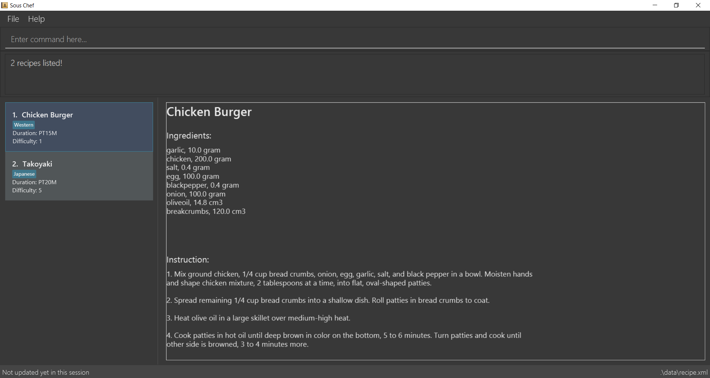

By: Team W10-4 Since: SEP 2018 Licence: MIT
1. Introduction
Souschef is your smart cooking sidekick, offering personalised guidance every step of the way. From recipe recommendations just for you, to meal planning and inventory management, Sous Chef has everything you need to improve life in the kitchen. The application works with a Command Line Interface (CLI) for speedy provision of recipe choices, management of your cooking plan while guiding you through the preparation process. With a few commands, this kitchen helper will be there to keep cooking as simple as ABC. Get started with Section 2, “Quick Start” and experience the fun from cooking meals.
2. Quick Start
-
Ensure you have Java version
9or later installed in your Computer. -
Download the latest
souschef.jarhere. -
Copy the file to the folder you want to use as the home folder.
-
Double-click the file to start the app. The GUI should appear in a few seconds.
 -
Type the command in the command box and press Enter to execute it.
e.g. typing-helpand pressing Enter will open the help window. -
Some example commands you can try:
-
-search KEYWORD… [xx KEYWORD…]: search for recipes related and excluded from the keywords -
-favorite: display personal favorited recipes -
-plannerlist: display personal meal schedule -
-exit: exits the app
-
-
Refer to Section 3, “Features” for details of each command.
3. Features
Command Format
-
Words in
UPPER_CASEare the parameters to be supplied by the user e.g. inadd n/NAME,NAMEis a parameter which can be used asadd n/Chicken Rice. -
Items in square brackets are optional e.g
-search KEYWORD… [xx KEYWORD…]can be used as-search Japanese xx Dairyor as-search Japanese. -
Items with
… after them can be used multiple times including zero times e.g.[t/TAG]…can be used ast/Japanese,t/Halal t/Seafoodetc.
3.1. Universal Commands
3.1.1. View help: -help [local]
To view the help menu containing all the universal commands.
local flag display local commands unique to an application page.
Format:
-help [local]
3.1.2. Navigate pages: -back [TIMES]/-forward [TIMES]
Navigate between past pages.
Format:
-back [TIMES]/-forward [TIMES]
3.1.3. Search and display recipes: -search KEYWORD… [xx KEYWORD…]
Show recipes related to the keyword(s).
Keywords include but not limited to cuisines (Indian, Japanese),
dietary types (vegan, Keto),
ingredients (egg, broccoli),
preparation time (quick, 30mins)
and difficulty (easy, simple, challenging).
Recipes with keyword(s) after xx are restricted.
Format:
-search KEYWORD… [xx KEYWORD…]
3.1.4. Display recipe suggestion: -suggest
Display system suggestions based on user’s past navigation history
and favorites.
Format:
-suggest
3.1.5. Display new recipe: -surprise
Display a random recipe for the user who wants to try something bold
and new but has no idea what they want.
Format:
-surprise
3.1.6. Display favorites: -favourite
List all the bookmarked favourite recipes of the user.
Format:
-favourite
3.1.7. Display ingredient manager: -ingredientmanager
Ingredient manager is an inventory manager that helps stock
tracking of existing ingredient available at home.
Format:
-ingredientmanager
3.1.8. Display meal planner: -plannerlist
Display current meal plan. shows the planned meals for breakfast,
lunch and dinner. Displays the calorie count for each meal, as well as the total calorie count
for the entire day.
Format:
-plannerlist
3.1.9. Add a recipe: -add n/NAME t/TIME d/DIFFICULTY i/INSTRUCTION… [t/TAG…] end
Add new recipe.
Format:
-add n/NAME t/TIME d/DIFFICULTY i/INSTRUCTION… [t/TAG…] end
3.1.10. Exit application: -exit
Format:
-exit
3.2. Recipes/Favourite List Commands
3.2.2. Activate cook-mode: cook INDEX
A cook mode that provides step-by-step guidance to aid real-time cooking.
Format:
cook INDEX
3.3. Recipe Details Commands
3.3.1. Add recipe to favourite: favourite
Add a recipe in their favourites list.
Format:
favourite
3.3.3. Active cook-mode: cook
A cook mode that provides step-by-step guidance to aid real-time cooking.
Format:
cook
3.3.4. Add to review [coming in V2.0]: review [Comment] RATING
Add comment and rating to current recipe.
Format:
review [Comment] RATING
3.4. Ingredient Manager Commands
3.4.1. Add an ingredient: add
Adds an ingredient to the ingredient manager.
Format:
add NAME AMOUNT DATE
3.4.2. List all ingredients: list
Shows a list of user’s ingredients.
Format:
list
3.4.3. Edit ingredient info: edit
Edit an existing ingredient in the ingredient manager.
Format:
edit NAME FIELD_NAME NEW_INFO (FIELD_NAME NEW_INFO)… end
3.4.4. Search ingredient: find
Find ingredients whose name contains any of the given keywords.
Format:
find KEYWORD…
3.4.5. Delete ingredient: delete
Delete ingredient(s) added by user.
Format:
delete NAME
3.4.6. Search recipes based on ingredients manager availability: select
Search for recipes based on ingredients stored in manager. User can add additional parameters to widen search result.
Format:
select [NUMBER_OF_SERVINGS] KEYWORD… optional KEYWORD… end
3.5. Meal Planner Commands
3.5.1. Delete recipe: delete
After displaying the meal planner, deletes the recipe at the specified meal slot.
Format: delete DATE TIME
3.6. Cook-Mode Commands
3.6.1. Next Instruction
Proceed to next instruction.
Format:
Hit Enter key
3.6.2. Previous Instruction: b
Revert to previous instruction.
Format:
b/back
3.6.3. Start timer: s
Begin countdown timer.
Format:
s/start
3.6.4. Pause timer: p
Pause countdown timer.
Format:
p/pause
3.6.5. Reset timer: r
End/Reset countdown timer.
Format:
r/reset
3.6.6. End cook-mode: end
To end step-by-step instruction of cook-mode.
Format:
end
3.7. Health-planner Command
3.7.1. Add plan: add
Adds a health plan under the user.
Required parameters are GOAL and DURATION
Format:
add GOAL DURATION
3.7.2. Delete plan: delete
After listing the list of health plans by user.
Deletes the plan selected by user.
Format:
delete INDEX
3.7.3. Edit plan: edit
After listing the list of health plans by User.
Prompts for edit on the plan selected by the user.
Format :
edit INDEX GOAL DURATION
3.7.4. Add current intake item: addIntake
After being shown the recipe list by the system
User selects to add to intake List
Format:
addIntake RECIPE_INDEX
3.7.5. Remove current intake item: removeIntake
After being shown the list of recipe from intake list
User selects recipe to remove
Format:
removeIntake INDEX_OF_ITEM
3.7.6. View overall intake : viewIntake
After shown the list of Recipes by the system
User enters command to view overall intake
Format:
viewIntake
3.7.7. Compare overall intake against : compareIntake
After being shown list of health plans
User enters command to compare against set health plan.
Format:
compareIntake PLAN_ID
4. FAQ
Q: How do I transfer my data to another Computer?
A: Install the app in the other computer and overwrite the empty data file it creates with the file that contains the data of your previous Souschef folder.
5. Command Summary
Universal Commands
-
View help:
-help [local] -
Navigate pages:
-back [TIMES]/-forward [TIMES] -
Search and display recipes:
-search KEYWORD… [xx KEYWORD…] -
Display recipe suggestion:
-suggest -
Display new recipe:
-surprise -
Display favorites:
-favourite -
Display ingredient manager:
-ingredientmanager -
Display meal planner:
-plannerlist -
Add a recipe:
-add n/NAME t/TIME i/INSTRUCTION… [t/TAG…] end -
Exit application:
-exit
Recipes/Favourite List
-
Display recipe details:
INDEX -
Activate cook-mode:
cook INDEX
Recipe Details Commands
-
Add recipe to favourite:
favourite -
Add to meal plan:
plan DATE TIME -
Active cook-mode:
cook
Ingredient Manager Commands
-
Add an ingredient:
add NAME AMOUNT DATE -
List all ingredients:
list -
Edit ingredient info:`edit NAME FIELD_NAME NEW_INFO (FIELD_NAME NEW_INFO)… end`
-
Search ingredient:
find KEYWORD… -
Delete ingredient:
delete NAME -
Search recipes based on ingredients manager availability:
select [NUMBER_OF_SERVINGS] KEYWORD… optional KEYWORD… end
Meal Planner Commands
-
Delete recipe:
delete DATE TIME -
Clear planner:
clearall
Cook-Mode Commands
-
Next Instruction: Hit Enter key
-
Previous Instruction:
b -
Start timer:
s -
Pause timer:
p -
Reset timer:
r -
End cook-mode:
end